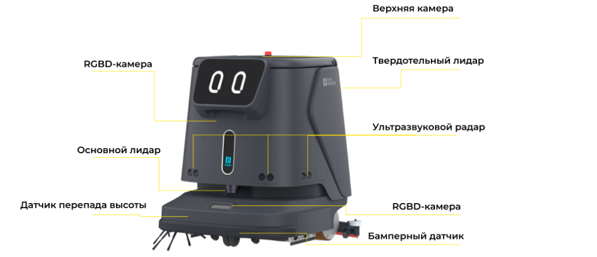

Хит4 режима
Pudu CC1
шум до 70 дБдок-станция опциональноковры с модулем
от N NNN NNN ₽базовый комплект
бизнес-центры, ритейл,отели, рестораны
Робот-уборщик выполняет ежедневную уборку больших площадей без участия оператора: подметает, моет пол, собирает пыль и высушивает покрытие за один проход. АТМ Альянс поставляет промышленные роботы-пылесосы и поломоечные машины для торговых центров, складов, аэропортов, отелей и бизнес-центров, выполняет пусконаладку и обучение персонала.


Для 5 000 м² с ночным окном в 6 часов достаточно одной машины, для 15 000 м² нужны несколько единиц или круглосуточный цикл с док-станцией.
Подобрать модель


Поставка партией, единый график пусконаладки, обучение персонала на каждом объекте, расходные материалы со склада.
Обсудить партиюЦены «от» условные и заполняются клиентом. Точная сумма в коммерческом предложении зависит от комплектации: док-станция, мобильный бак, модуль для ковров, запасные щётки.
Таблица из согласованного текста раздела, дополнена производительностью и баками из карточек.
| Модель | Тип уборки | Производительность | Баки, автономность | Основное применение | Цена от |
|---|---|---|---|---|---|
| Pudu CC1 | Мойка, подметание, вакуум, сухая протирка | 700-1 000 м²/ч | 15 + 15 л, 5 ч мойки, 9 ч протирки | Бизнес-центры, ритейл, отели, рестораны | N NNN NNN ₽ |
| Keenon C40 | Мойка, подметание, вакуум, протирка | до 1 100 м²/ч | 16 + 14 л, 5 ч мойки, 12 ч подметания | Торговые центры, супермаркеты, школы, офисы | N NNN NNN ₽ |
| Kleenbot C30 | Влажная и сухая уборка | м²/ч | л, ч | Помещения средней площади | N NNN NNN ₽ |
| Pudu MT1 VAC | Подметание и вакуумная уборка | м²/ч | л, ч | Открытые зоны, ковровые покрытия, фуд-корты | N NNN NNN ₽ |
| Viggo SC80P | Сбор пыли и мусора, влажная уборка | м²/ч | л, ч | Склады, производства, большие залы | N NNN NNN ₽ |
| C50 | Уборка твёрдых покрытий | м²/ч | л, ч | Подземные парковки | N NNN NNN ₽ |
| Linkong K3 | Мойка остекления | м²/ч | ч | Стеклянные фасады и витражи | N NNN NNN ₽ |
| C20 | Влажная и сухая уборка | м²/ч | л, ч | Офисы, небольшие залы | N NNN NNN ₽ |
| S11 | Влажная и сухая уборка | м²/ч | л, ч | Коммерческие помещения | N NNN NNN ₽ |
Ориентир по производительности: модели среднего класса убирают от 700 до 1 100 м² в час. Для объекта 5 000 м² с ночным окном в шесть часов достаточно одной машины, для 15 000 м² потребуется несколько единиц техники либо круглосуточный цикл с автоматической зарядкой и доливом воды.
Определяет производительность в м²/ч и ёмкость баков. Уточнить площадь объекта и время, выделяемое на уборку.
Набор щёток и доступные режимы. Плитка, керамогранит, наливной пол или ковровое покрытие.
Требования к навигации и габаритам. Ширина проходов, пороги, наличие лифтов и стеллажей.
Автономность и потребность в док-станции. Дневная работа при посетителях или ночная смена.

Одна машина выполняет объём работ ночной смены, это снижает расходы на зарплату.
Маршрут и график задаются один раз, дальнейшая уборка выполняется автоматически.

Одинаковый прижим щёток и расход воды на всей площади, человеческий фактор исключён.

Подметает, моет и собирает воду за один проход, покрытие остаётся сухим.
Уровень шума ниже 70 дБ позволяет убирать в присутствии посетителей.
Убранная площадь, время работы и расход воды по каждой машине.
Робот в зале воспринимается посетителями как признак современного сервиса.
Тестовый запуск на объекте заказчика, условия согласовываются индивидуально.
Единый прайс не публикуется: конфигурация подбирается под объект. В прототипе рекомендуем цену «от» на карточках.

Построение карты помещения, настройка маршрутов и расписания, обучение персонала.
Ежедневно: чистка щёток и промывка бака. Периодически: замена скребков и фильтров по мере износа.
Площадь объекта, тип покрытия и желаемый график уборки.
Вместе с сотрудником отдела продаж подбираем модель и считаем число машин.
Цена, комплектация и срок поставки. Согласование договора.
При необходимости тестовый запуск на объекте, затем поставка и пусконаладка.
Робот-уборщик для торговых центров решает проблему постоянного загрязнения полов в местах с большой проходимостью. Днём машина работает деликатно, объезжая тележки и посетителей, ночью выполняет генеральную уборку зала.
Большие площади с однородным покрытием идеально подходят для робота-уборщика: маршрут строится один раз, дальнейшее перемещение между стеллажами выполняется по расписанию.
Оборудование обслуживает терминалы и залы ожидания в непрерывном цикле: после завершения участка машина возвращается на станцию, сливает воду, заряжается и продолжает работу.
Уборка лобби, коридоров и конференц-залов проводится тихо и не создаёт неудобств для гостей.
Днём локальная уборка загрязнений, ночью полноценная мойка пола. Промышленный робот-пылесос с влажной уборкой подметает, моет и собирает воду за один проход.
В каталоге серийные модели Pudu, Keenon (линейка Kleenbot), Viggo и Linkong: для ровных гладких полов, коврового покрытия и мойки фасадного остекления. Если подходящая позиция не нашлась, оставьте заявку: специалисты подберут модель с учётом площади, покрытия и графика работы объекта.